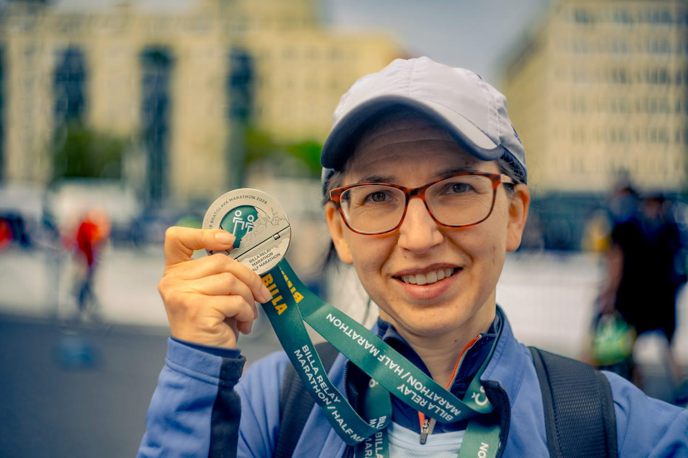
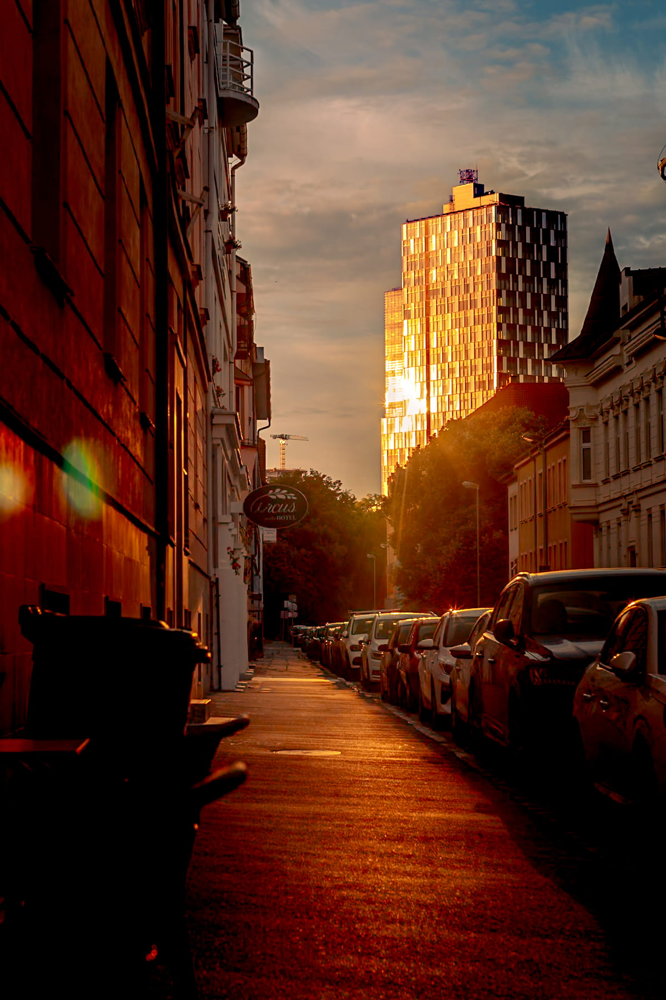
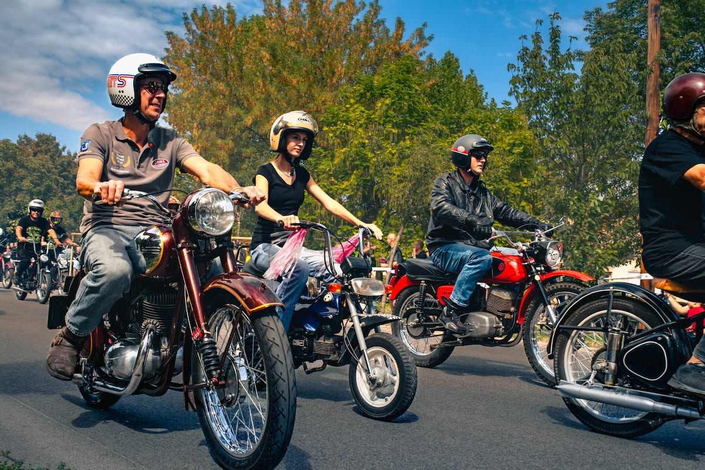
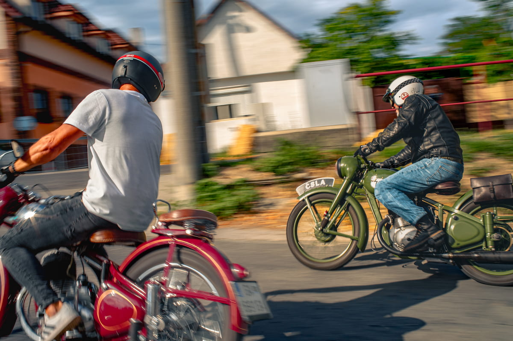
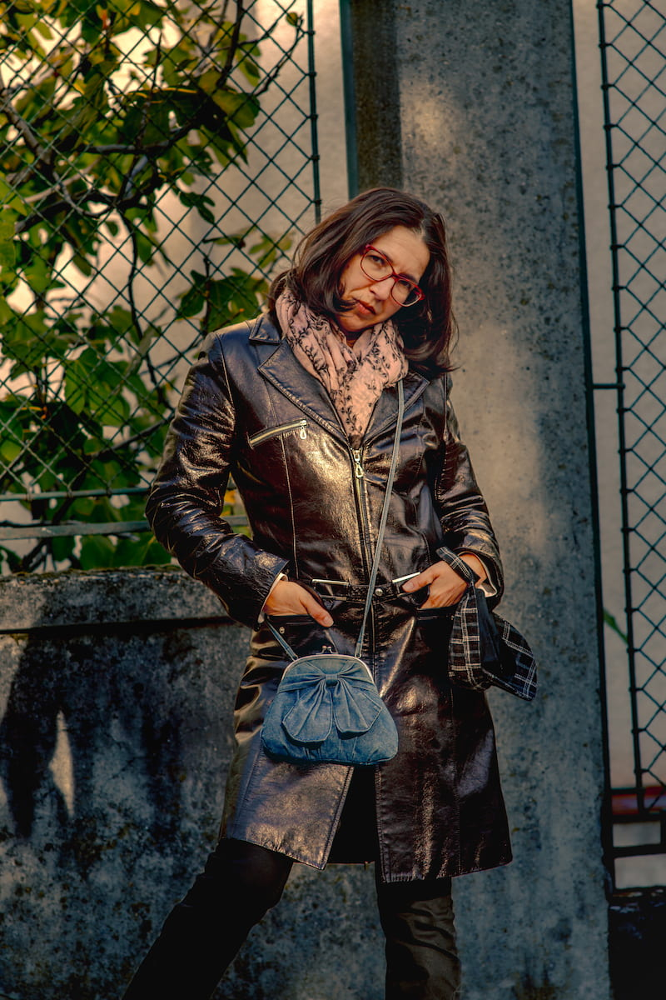
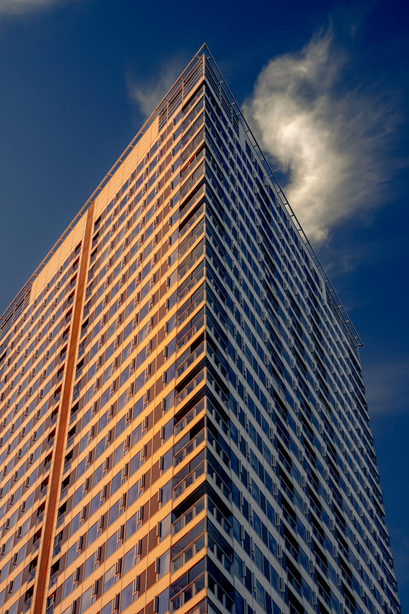
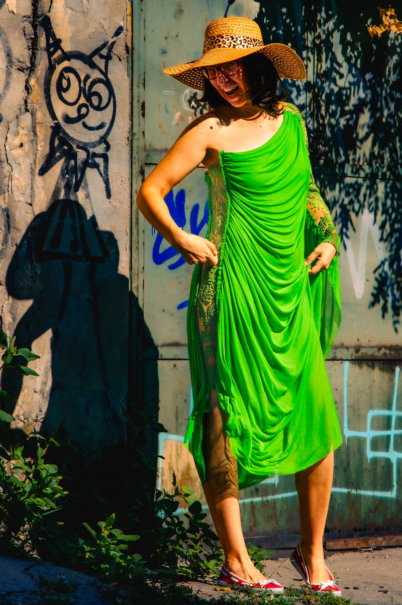
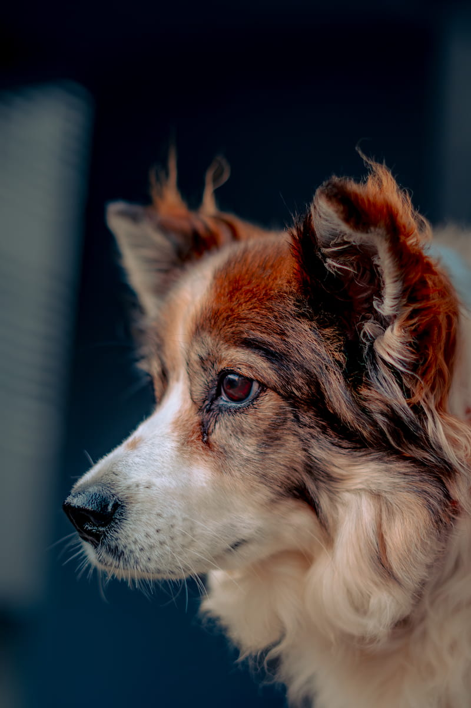
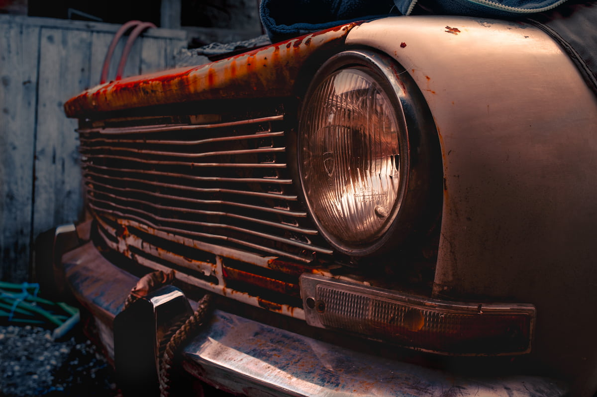

iRadka.com
Fotografie s dušou, bez prhnanej superostrosti


Ranná hmla a staré sklo01 / 12
Pohľad, ktorý nereže02 / 12

Neostrosť ako emócia03 / 12

Svetlo v izbe04 / 12

05 / 12

06 / 12

07 / 12

08 / 12

09 / 12

10 / 12

11 / 12

12 / 12
Toč kolieskom myši alebo klikni na fotku
„Svetlo v starom okne nikdy netreba doostrovať...“
— Poznámka z archívu, 1984
— Poznámka z archívu, 1984
KONTAKT